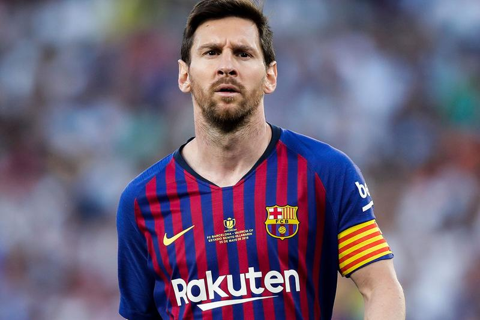

전 세계 가장 유명한 별들의 전쟁이라고 불리는 리그
프리메라리가는 스페인에서 진행되는 프로 축구입니다. 제가 두번째로 좋아하는 축구리그이기도 합니다. 이전에 메시와 호날두의 뜨거운 경쟁으로 엄청나게 핫하던 프로 리그 입니다. 현존 최고의 팀이라고 불리우는 유명한 팀 바르셀로나, 레알 마드리드가 이 리그에 속해있죠. 세계적인 스타 앙리, 베컴, 반니스텔루이, 로벤, 호날두, 메시, 주앙 펠릭스, 토레스, 가레스 베일 안드레 이니에스타, 알론소, 사비, 호나우두, 호나우지뉴, 즐라탄 이브라히모비치 등 이 밖에도 수많은 슈퍼스타들이 누비던 프로축구 리그입니다.
좋아하는 팀과 선수들, 스타 플레이어
프리메라리가는 수많은 스타플레이어들이 뛰고 있어서 별들의 전쟁이라고 불립니다. 한국 선수들이 많지 않아서 아쉽기는 하지만, 제가 좋아하는 메시, 레알 마드리드 팀이 있기 때문에, 언제나 반가운 소식을 접할 수 있는 프로 축구 리그입니다. 유독 라리가에서는 항상 이슈가 되는 경기가 있는데요. 바로 바르셀로나와 레알 마드리드 두 팀을 별들의 전쟁이라고 표현합니다. 정말 흥미진진한 프로 리그입니다.
라리가 갤러리
